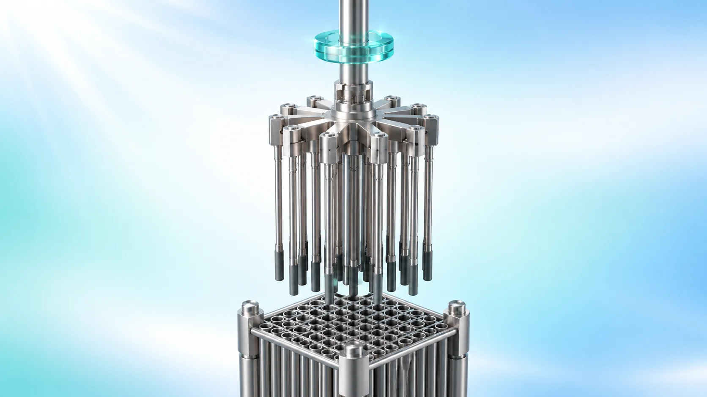
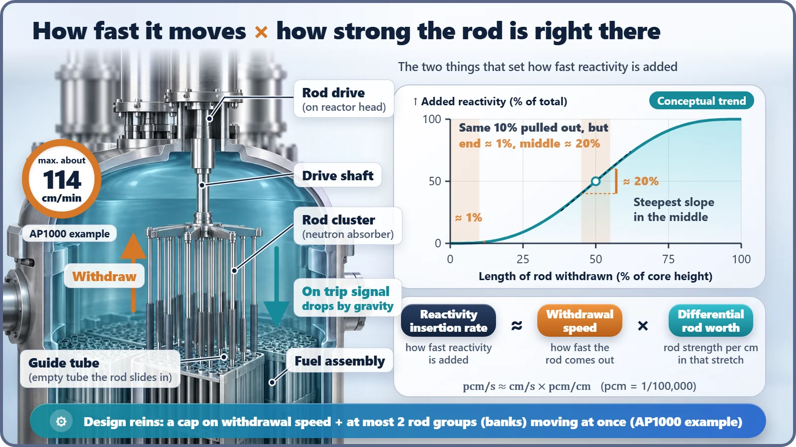
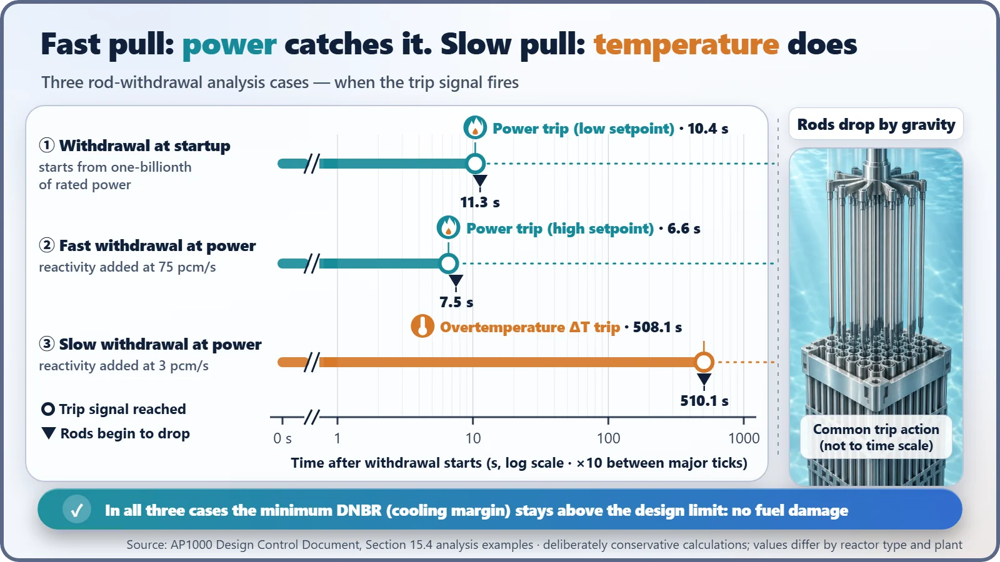

Safety Principles & Accident Analysis · 211
"Put It In!" — and It Came Out: The Control Rod Withdrawal Accident
When the reactor's brake keeps coming out against the plan, layered limits and watchdogs make sure it stops without fuel damage.

A control rod withdrawal accident is an event in which a fault in the rod drive system, or an operator error, keeps pulling control rods out of the core against the intended plan, so reactor power rises when nobody wants it to. How fast it develops is roughly withdrawal speed times rod worth. Speed limits, the fuel's own Doppler feedback, withdrawal blocks, speed-dependent trip signals and a gravity drop are layered so that the reactor stops without fuel damage.
"Put it in!" and it came out
1993, Salem Unit 2 in the United States. The plant had just finished a refueling outage and the operators were bringing the reactor back up. An operator ordered a group of control rods to move into the core, and one cluster in that group did the opposite: it moved out. The operators stopped the startup at once, and the cause was traced to a suspected fault in the control circuitry that moves the rods. That same year, the US Nuclear Regulatory Commission (NRC) sent a letter asking most plants of that design to check whether their circuits had the same weak spot.[3]
Why would one rod moving the wrong way stir up a national regulator? The answer is today's topic: the control rod withdrawal accident.
When the brake lets go on its own
Control rods are bundles of rods made from materials that soak up neutrons very well. The deeper they sit in the core, the more neutrons they intercept, and the more they hold the chain reaction down. They are the reactor's brake. One clarification: they don't stop the reaction by pressing on the fuel. They stop it by absorbing neutrons.
So a control rod coming out means the brake is easing off. Picture riding a bicycle downhill and absent-mindedly letting the brake lever slip, bit by bit. You pick up speed without trying. A control rod withdrawal accident is an event in which a fault in the rod drive system, or an operator error, keeps pulling control rods out against the intended plan, so the reactor's power rises when nobody wants it to.[1]
How fast does it pick up? Speed × worth
How quickly the bicycle accelerates depends on two things: how fast you let go of the lever, and how hard the brake was gripping at that moment. Control rods work the same way.
How fast the reactor gains strength (the rate at which reactivity, the chain reaction's urge to grow, is added) ≈ withdrawal speed × the worth of the rod in that stretch
"Worth" is the technical term for how much stronger the reactor becomes when the rod is pulled out by 1 cm. Interestingly, this worth is largest in the middle of the core and small near the top and bottom ends.[4]

So designers put reins on every part of that formula. In a pressurized water reactor (PWR), the control rods are lifted one step at a time by drive mechanisms that sit on top of the reactor head, and their maximum speed is fixed (for example, about 114 cm per minute for the AP1000). At most two rod groups can move at once, and only in a set order. Safety analysis goes a step further still: it assumes conditions even harsher than "the two strongest groups pulled out together, at maximum speed, through their strongest stretch."[2]
Fast pulls are caught by power, slow pulls by temperature
So what happens once a rod actually starts coming out? First, there is a brake the reactor applies by itself. As power rises the fuel heats up, and the hotter uranium-238 in the fuel absorbs more neutrons, which naturally takes the edge off the power rise (the Doppler effect). Think of it as air resistance that grows the faster you ride.
On top of that, man-made watchdogs stand in layers. When power or temperature approaches a setpoint, a rod withdrawal block kicks in and stops any further withdrawal. If things keep rising anyway, a reactor trip signal goes out; the drive mechanisms let go of the rods, and the rods drop under gravity into the core.
Here's the interesting part: which watchdog notices first depends on how fast the rods are coming out. Think of a gas burner. Turn the flame up sharply and you can see the change in the flame right away. Turn it up a tiny bit at a time and the flame looks the same, but the temperature of the water in the pot is the first thing to tell you something is off. In the reactor, a fast withdrawal is mainly caught by monitoring that watches the neutron count (power), and a slow withdrawal mainly by monitoring that weighs the coolant temperature difference together with pressure and other variables (overtemperature ΔT).

Take the AP1000 design certification analysis as an example.[2] When rods come out quickly during power operation (reactivity added at 75 pcm per second, where pcm means one hundred-thousandth), the power monitoring issues a trip signal after just 6.6 seconds. When they come out very slowly (3 pcm per second), the temperature monitoring catches it only after about 508 seconds. A withdrawal during startup, just as the reactor is being brought up, is tripped by the power monitoring at 10.4 seconds. In all three cases the cooling margin at the fuel surface stays above its limit, and the conclusion is no fuel damage. These numbers are, of course, analysis examples built on deliberately unfavorable assumptions, and they differ by reactor type and plant.
| Analysis case (AP1000 example) | Trip signal | Trip reached | Rods begin to drop |
|---|---|---|---|
| Withdrawal at startup | Power range, low setpoint | 10.4 s | 11.3 s |
| Fast withdrawal at power (75 pcm/s) | Power range, high setpoint | 6.6 s | 7.5 s |
| Slow withdrawal at power (3 pcm/s) | Overtemperature ΔT | 508.1 s | 510.1 s |
The easily confused twin: rod ejection
Don't mix this up with the similarly named control rod ejection accident. In an ejection accident, the pressure housing around the drive mechanism breaks, and the high pressure inside the reactor shoves the rod out in less than a second. Because the pressure boundary fails, the cause is different from the start; it is a much faster and rarer accident and is classified separately. A withdrawal accident, by contrast, is a control fault in which the drive keeps lifting the rod "within its set speed." And an event in the opposite direction, where a rod unintentionally falls into the core (a "dropped rod"), is another story again.
One more point: a withdrawal accident is classified as an event that could plausibly happen once or so over a plant's lifetime. Because it is assumed to be that likely, the bar is strict. The design promise is that even if it happens, the fuel must not be damaged.[1]
Three lessons from a brake that let go
First, control rods are a brake that works by absorbing neutrons, and a control rod withdrawal accident is that brake coming out against the plan. Second, how fast the reactor gains strength is roughly "withdrawal speed × rod worth," so the design limits both the speed and the number of rod groups that can move at once. Third, the fuel's own self-braking, the withdrawal block, speed-dependent watchdogs and the gravity drop back one another up, so the reactor is designed to stop without fuel damage.
The single rod at Salem stirred the regulator because it moved "in a way the design had not assumed." That is exactly why nuclear plants assume such events in advance, calculate them, and check again whenever a gap appears.